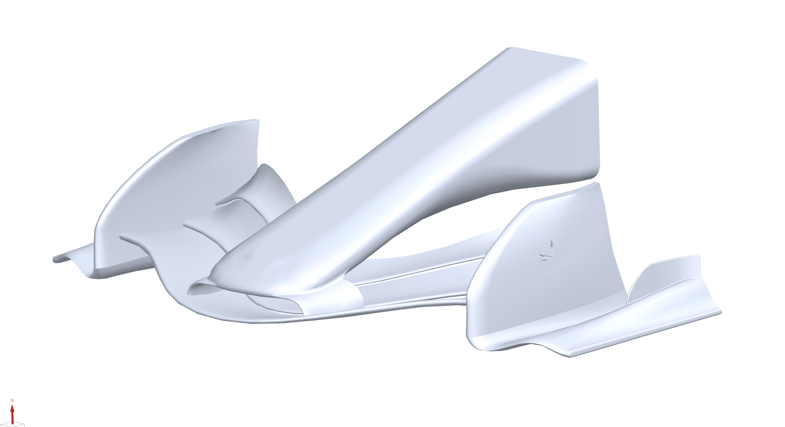
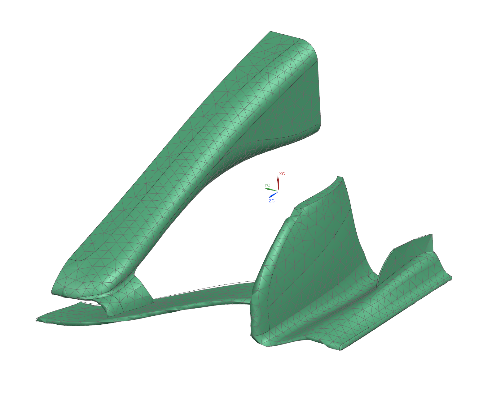

Back to projects
Aerospace Structures & Materials
Structural Analysis of an F1 2026 Front Wing
A team structural-analysis project combining Siemens NX CAD and FEM,
aerodynamic load estimation, hand calculations, material comparison, and a
fabricated scale model of a regulation-era front wing.
My contribution
- Scaled the source CAD model to the 1900 mm regulation width.
- Built a refined FEM model with a 5.15 mm surface mesh and approximately 1.31 million elements.
- Created an NX material model using carbon-fiber properties and evaluated polyurethane and carbon-fiber cases.
- Applied five equal point loads to represent a 322.45 N distributed aerodynamic load.
- Converted an NX airfoil section from DXF to coordinate data for XFOIL and documented geometry-related convergence limits.


Analysis approach
CAD to structural model
The team prepared a half-wing model using symmetry, assigned structural
materials, refined the mesh, applied constraints at the nose and symmetry
plane, and compared response under point and distributed loading cases.
Siemens NXSimcenter NastranFEMMaterial Selection
Results
Stress and displacement behavior
The simulations produced the expected stress and displacement patterns for
the polyurethane and carbon-fiber property models. The study concluded that
aerodynamic loading was less likely to cause structural failure than impact
or collision damage for the analyzed cases.
The report also documents an important limitation: carbon fiber was modeled
as a solid isotropic material, so the generated deflection and stress values
are useful for comparison but not a final composite certification result.


Fabrication
Scale model
The CAD was separated into printable components, SLA printed at 15.06% of
full scale, cleaned, finished, and assembled. The model establishes a path
toward future wind-tunnel testing at matched Reynolds-number conditions.